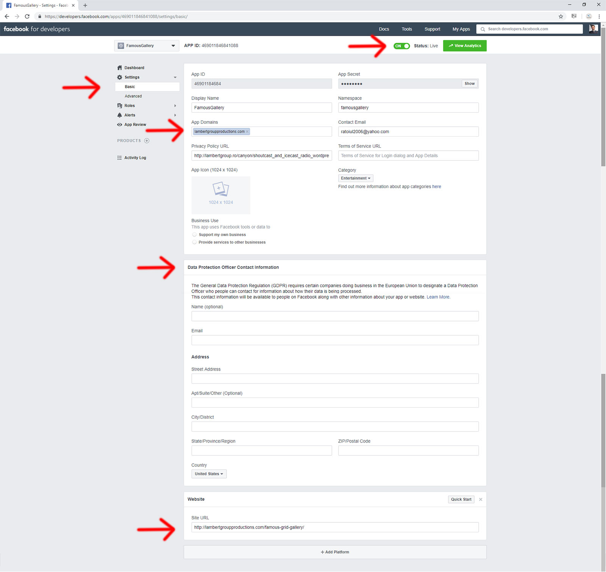

This plugin requires at least WordPress 3.0
Installation – https://www.youtube.com/watch?v=EmlD9qwd0B0
How to use the plugin – https://www.youtube.com/watch?v=8qA3LlLxnPA
How To Automatically generate the player playlist by reading the folder which contains the MP3 files – https://www.youtube.com/watch?v=iBOPpPxQqvw
Step 1. Enter in your wordpress CMS and go to Plugins menu
Step 2. Under Plugins menu click "Add New"
Step 3. Select "Upload", choose the archive lbg-audio7_html5_full_width_sticky_pro.zip.zip that you downloaded and hit "Install Now"
Step 4. After the plugin is installed click "Activate Plugin"
Step 5. In you page just add the shortcode: [lbg_audio7_html5 settings_id='1']
click here for more details regarding the shortcode
| css | the folder contains the .css files used by the pluging |
| images | the folder contains the images used by the pluging |
| js | the folder contains the .js files used by the pluging |
| audio7_html5 | the folder contains the .js & .css files that the audio player use |
| tpl | the folder contains the template files used by the pluging |
| lbg-audio7_html5.php.php | the plugin itself |
From this section you can define the players.
If you need to include multiple players in your pages with different settings and playlist you can define the players and manage the settings for each one.
If you need only one player in your website, just edit the default one.
From this section you can define the audio player settings.
| Attribute | Description |
| General settings | |
| Skin | The audio player comes with 2 predefined controllers skins (white and black). By controllers we understand rewind, play, pause, previous, next, volume, shuffle, download, facebook, twitter, show/hide playlist buttons. These buttons are saved as .png images. If you need another color for these controllers, you have the PSD files included and you can save over one skin, the controllers with another color.
Possible values: |
| Responsive |
Possible values: true - the player will responsive false - the player will not be responsive |
| Sticky | Possible values: true - the audio player will be positioned on the bottom of the page beeing fixed while the page scrolls false - the audio player will NOT be positioned on the bottom of the page beeing fixed while the page scrolls |
| Start Minified | Possible values: true - the audio player start minified and only 'show/hide' button will visible. If you set this parameter true you also need to set Sticky:true false - the audio player will start with the normal/standard dimension. |
| Continuous Playback | Possible values: true - When you'll change the page, the player will continue from the previous minute. Also, the volume will remain as previously set. This will ensure a smooth playback across your entire webiste. false - When you'll change the page, the player will NOT continue from the previous minute. |
| Initial Volume |
You can initialize the volume. The range is 0 to 1 |
| Auto Play | Possible values: true - autoplays audio file false - doesn't autoplay audio file |
| Loop | Possible values: true - starts next audio file after current audio file has finished false - doesn't start next audio file after current audio file has finished |
| Shuffle | Possible values: true - the playlist will be played in shuffle mode false - the playlist will be played in normal mode |
| Player Background | Player background color (hexa) or choose an image as background |
| Empty Buffer Color | Player buffer color (hexa)- empty state |
| Full Buffer Color | Player buffer color (hexa) - full state state |
| Seekbar Color | Seekbar color (hexa) |
| Volume Off State Color | Volume slide color (hexa) - off state |
| Volume On State Color | Volume slide color (hexa) - on state |
| Timer Color | Timer color (hexa) |
| Song Title - Text Color | Audio file Title text area color (hexa) which resides next to the image |
| Song Author -Text Color | Audio file Author text area color (hexa) which resides next to the image |
| Bars Color | The bars animation color |
| FaceBook AppID | FaceBook AppID. Please check Facebook Share section, for more informations |
| Face Book Share Title | The title which will appear on FaceBook share. Please check Facebook Share section, for more informations |
| FaceBook Share Description | The description which will appear on FaceBook share. Please check Facebook Share section, for more informations |
| Activate Google Analytics Traking | Possible values: true - Google Analytics tracking will be enabled false - Google Analytics tracking will be disabled |
| Your Google Analytics Traking Code |
Your Google Analytics code. Example: UA-3245593-1 |
| Show 'Clear Favorites' Button | Possible values: true - you'll activate the favorite button for each playlist item & clear favorites button which will allow you to create a playlist of favorites audio files or to clear the favorite audio files playlist. false - no favorite buttons will appear |
| Favorites Cookie Expiration Time | You can set how much time (in days) the favorite audio files playlist will last on client computer. |
| Popup Width | The initial popup window width |
| Popup Height | The initial popup window height |
| Controllers Settings: Show/Hide buttons & elements | |
| Show Vinyl Record | Possible values: true - the vinyl record animation will appear false - the artist image defind in the playlist, will appear. Example: <li class="ximage">audio/images/p1.jpg</li> |
| Show Rewind Button | Possible values: true - rewind button will appear false - rewind button will not appear |
| Show Next & Previous Buttons | Possible values: true - next & previous buttons will appear false - next & previous buttons will not appear |
| Show Shuffle Button | Possible values: true - shuffle button will appear false - shuffle button will not appear |
| Show Download Button | Possible values: true - download button will appear false - download track button will not appear |
| Show Facebook Button | Possible values: true - facebook button will appear false - facebook button will not appear |
| Show Twitter Button | Possible values: true - twitter button will appear false - twitter button will not appear |
| Show Buy Button | Possible values: true - buy lyrics will appear false - buy lyrics button will not appear |
| Buy Button Title | The lyrics button title |
| Buy Button Target | Possible values: '_blank' - the buy link will open in a new window '_self'- the buy link will open in the same window |
| Show Lyrics Button | Possible values: true - twitter button will appear false - twitter button will not appear |
| Lyrics Button Title | The buy button title |
| Lyrics Button Target | Possible values: '_blank' - the lyrics link will open in a new window '_self'- the buy lyrics will open in the same window |
| Show Author | Possible values: true - audio track Author will appear false - audio track Author will not appear |
| Show Title | Possible values: true - audio track Title will appear false - audio track Title will not appear |
| Show Popup Button | Possible values: true - the popup button will appear false- the popup button will not appear |
| Show Playlist Button | Possible values: true - show/hide playlist button will appear false - show/hide playlist button will not appear |
| Playlist Settings | |
| Show Playlist | Possible values: true - playlist will appear false - playlist will not appear |
| Show Playlist On Init | Possible values: true - playlist will appear on init false - playlist will not appear on init |
| Playlist Top Position | Playlist distance from the audio player |
| Playlist Background Color | Playlist background color (hexa) |
| Playlist Record Background Off Color | Playlist item background color (hexa) - OFF state |
| Playlist Record Background On Color | Playlist item background color (hexa) - ON state |
| Playlist Record Bottom Border Off Color | Playlist item bottom border color (hexa) - OFF state |
| Playlist Record Bottom Border On Color | Playlist item bottom border color (hexa) - ON state |
| Playlist Record Text Off Color | Playlist item text color (hexa) - OFF state |
| Playlist Record Text On Color | Playlist item text color (hexa) - ON state |
| Number Of Items Per Screen | Number of items shown in the playlist. You'll have to scroll to see the rest |
| Playlist Padding | Playlist inner padding |
| Show Playlist Number | Possible values: true - the item number in the playlist will appear false - the item number in the playlist will not appear |
| Show Search Area | Possible values: true - the search area will appear false - the search area will not appear |
| Search Area Background Color | Search area background color (hexa) |
| Search Input Text | Search input initial text, useful for translation purpose |
| Search Input Background Color | Search input background color (hexa) |
| Search Input Border Color | Search input border color (hexa) |
| Search Input Text Color | Search input text color (hexa) |
| Search Inside Author Field | Possible values: true - it will search in author filed, too false - it will not search in author filed |
| Category Settings | |
| Show Categories | Possible values: true - the categories will appear false - the categories will not appear |
| First Selected Category | The name of the first displayed category (in the top of the playlist). If no value is selected, since the categories will be alphabetically ordered, the first one will be displayed as the first selected category |
| Selected Categ Background Color | Selected category background color (hexa) |
| Selected Categ Off Color | Selected category color (hexa) - OFF state |
| Selected Categ On Color | Selected category color (hexa) - ON state |
| Selected Category Bottom Margin | Selected category bottom margin |
| Category Record Background Off Color | Category item background color (hexa) - OFF state |
| Category Record Background On Color | Category item background color (hexa) - ON state |
| Category Record Bottom Border Off Color | Category item bottom border color (hexa) - OFF state |
| Category Record Bottom Border On Color | Category item bottom border color (hexa) - ON state |
| Category Record Text Off Color | Category item text color (hexa) - OFF state |
| Category Record Text On Color | Category item text color (hexa) - ON state |
| Title | audio file title |
| Author | audio file author |
| Author Link (Optional) | you can define for the song author a link |
| Author Link Target (Optional) | Possible values: _blank - the song author link will be opened in a new window _self - the song author link will be opened in the same window |
| Category | audio file category. An audio file can belong to multiple categories |
| Playlist image | audio file author playlist image |
| Buy Link | buy link |
| Lyrics Link | lyrics link |
| MP3 file (Chrome, IE, Safari) | .mp3 file name. |
| OGG (Firefox & Opera) | .ogg file name. |
In order for the Facebook share button to work you need to obtain a Facebook Application ID
1. Go to the Facebook Developers Apps page and and sign in with your Facebook username and password.
2. Click the "Add a New App" button.
If you do not see the option to create a new app in the upper right hand corner, click on "Register as Developer."
3. After that you'll obtain an 'App ID' which you'll edit Facebook App ID parameter from Manage Players->Player Settings area of our plugin.
4. Go to Settings->Basic tab (left area), select 'Website' and insert your website URL and fill all the other information. Below you have a demo screenshot. Of course, you'll use your own info.

5. Go to Settings->Advanced tab (left area) and activate 'Social Discovery'
6. To personalize more the share content you can use FaceBook Share Title and FaceBook Share Description fields in Manage Players->Player Settings area of our plugin. Please check Player Settings section, to see all available parameters
The shortcode is:
[lbg_audio7_html5 settings_id='1']
where
settings_id is the player ID defined in "Manage Players" section
If you need to increase the wordpress media library upload file size limit add the following definitions in the .htaccess file
<IfModule mod_php5.c>
php_value post_max_size 10M
php_value upload_max_filesize 40M
php_value memory_limit 500M
</IfModule>
1. You can load a new song by adding a javascript function to a button on the page.
jQuery.audio7_html5.changeMp3('mp3_url','song_name','song_author','image_url');
Example:
2. You can change the category by adding a javascript function to a button on the page.
jQuery.audio7_html5.changePlaylist('category_title');
Example: